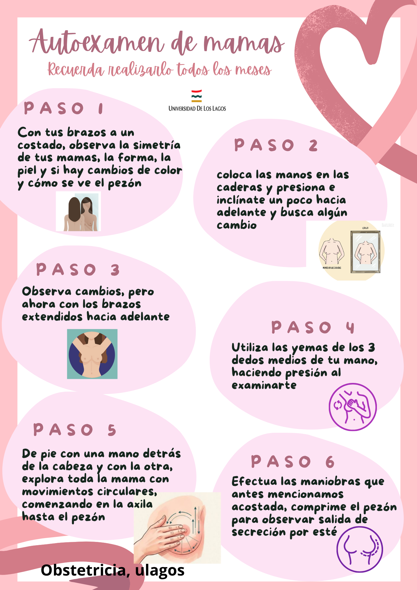

¿Qué llevar en tu bolso de parto?
Lista de cotejo recomendada para el ingreso a maternidad:
- Cédula de Identidad y carnet de control prenatal.
- 3 a 4 piluchos o bodys de algodón para el recién nacido.
- 3 a 4 enteritos/pijamas de recién nacido.
- 1 paquete de pañales de recién nacido.
- Manta o tutito suave de algodón.
- Camisa de dormir o pijama cómodo con apertura frontal (lactancia).
- Utensilios de aseo personal (cepillado, jabón, toalla).
- Toallas higiénicas de maternidad.
Técnicas de Lactancia
Un buen acople es fundamental para evitar grietas y asegurar la nutrición de tu bebé. Revisa el siguiente video:
Alarma en el Embarazo
Si presentas alguno de estos síntomas, acude de inmediato a Urgencia Maternidad:
Sangrado Vaginal
Cualquier pérdida de sangre por vagina, abundante o escasa, debe ser evaluada.
Pérdida de Líquido por Vagina
Salida de líquido transparente o con mal olor (posible rotura de bolsa de aguas).
Dolor de Cabeza / Visión Borrosa
Cefalea intensa, ver luces/chispas o pitos en los oídos (relacionado con presión alta).
Menos Movimientos Fetales
Si notas que tu bebé se mueve significativamente menos tras las 28 semanas.
Alarma Ginecológicos
Sangrado Anormal o Posmenopáusico
Sangrados fuera del ciclo, muy abundantes o tras la menopausia.
Dolor Pélvico Agudo
Dolor bajo vientre severo o repentino que no cede con analgésicos.
Flujo Vaginal Atípico
Flujo con mal olor, verdoso/amarillento, con picazón intensa o ardor.
Alteraciones en las Mamas
Bultos o bultitos, secreción de sangre por pezón o enrojecimiento de la piel.
Complicaciones con Anticonceptivos
Dolor severo tras colocación de DIU o infección en la zona del implante.
Autoexamen de Mamas

Anticonceptivos en APS
Métodos disponibles en tu CESFAM/CECOSF y sus efectos esperables:
| Método | Frecuencia | Efectos Secundarios Comunes |
|---|---|---|
| Hormonal Combinado | Diario / Mensual | Sensibilidad mamaria, cefalea leve, náuseas iniciales. |
| Progestágeno Solo | Diario / Trimestral | Ausencia de regla (amenorrea), manchados irregulares (spotting). |
| Implante Subdérmico | 3 a 5 años | Manchados variables, amenorrea, sensibilidad mamaria. |
| DIU T de Cobre | Hasta 10 años | Aumento del sangrado menstrual y cólicos más intensos. |
| Preservativos | Uso único | Sin efectos hormonales. Protege contra ITS. |
Nota: Los efectos secundarios suelen disminuir progresivamente tras los primeros 3 meses de uso.
Cuidados y Recomendaciones
Indicaciones para procedimientos frecuentes:
Post-Inserción de Implante
- Mantener el parche seco por 24 a 48 horas.
- No levantar objetos pesados con ese brazo por 2 días.
- Es normal la aparición de un pequeño moretón.
- Consultar si hay enrojecimiento severo, pus o dolor punzante.
Post-Inserción de DIU T de Cobre
• Evitar relaciones con penetración y tampones por 7 días.
• Es normal sentir cólicos leves los primeros días.
• Controlar presencia de hilos tras tu primera regla.
• Consultar si hay fiebre, dolor intenso o flujo con mal olor.
Cuidados Posparto / Puerperio
• Herida operatoria: Lavar sólo con agua y jabón neutro, secar con toques suaves.
• Loquios: Sangrado disminuye progresivamente. Usar toallas de maternidad.
• Acudir a control de puerperio a los 7-10 días.
Cuidados del Recién Nacido
Recomendaciones esenciales para los primeros días de vida:
Cuidado del Cordón Umbilical
• Limpiar la base del cordón en cada muda con gasa y alcohol al 70%.
• Dejar secar al aire y colocar el pañal por debajo del cordón para evitar roce y humedad.
• Cae espontáneamente entre los 7 a 14 días.
Sueño Seguro
• Acostar al bebé siempre de espalda (boca arriba).
• Usar colchón firme, sin almohadas, peluches o cobertores pesados.
• Mantener la habitación a temperatura agradable y libre de humo de cigarro.
Aseo y Baño
• Baño corto con agua tibia (36-37°C) y jabón neutro.
• Realizar muda frecuente para prevenir dermatitis del pañal.
• Limpiar de adelante hacia atrás en las niñas.
Signos de Alerta en el Recién Nacido
Acude de urgencia si presenta: Fiebre (37.5°C o más), color amarillo de la piel que llega a las piernas, rechazo de las tomas/lactancia, somnolencia extrema (no despierta) o secreción con mal olor/enrojecimiento en el cordón.
¿Cuándo consultar a la Matrona?
Exámenes preventivos y frecuencias según norma MINSAL:
| Examen | Población | Frecuencia |
|---|---|---|
| Papanicolaou (PAP) | 25 a 64 años | Cada 3 años (con resultados normales). |
| Detección de VPH | 30 a 64 años | Cada 5 años según esquema de tamizaje. |
| Mamografía Preventiva | 40 a 69 años | Cada 2 años (gratuita en APS). |
| Examen Preventivo (EMPA) | 20 a 64 años | Anual (evalúa presión, glicemia y colesterol). |
| Examen del Adolescente | 10 a 20 años | Anual (evalúa desarrollo, peso y presión). |